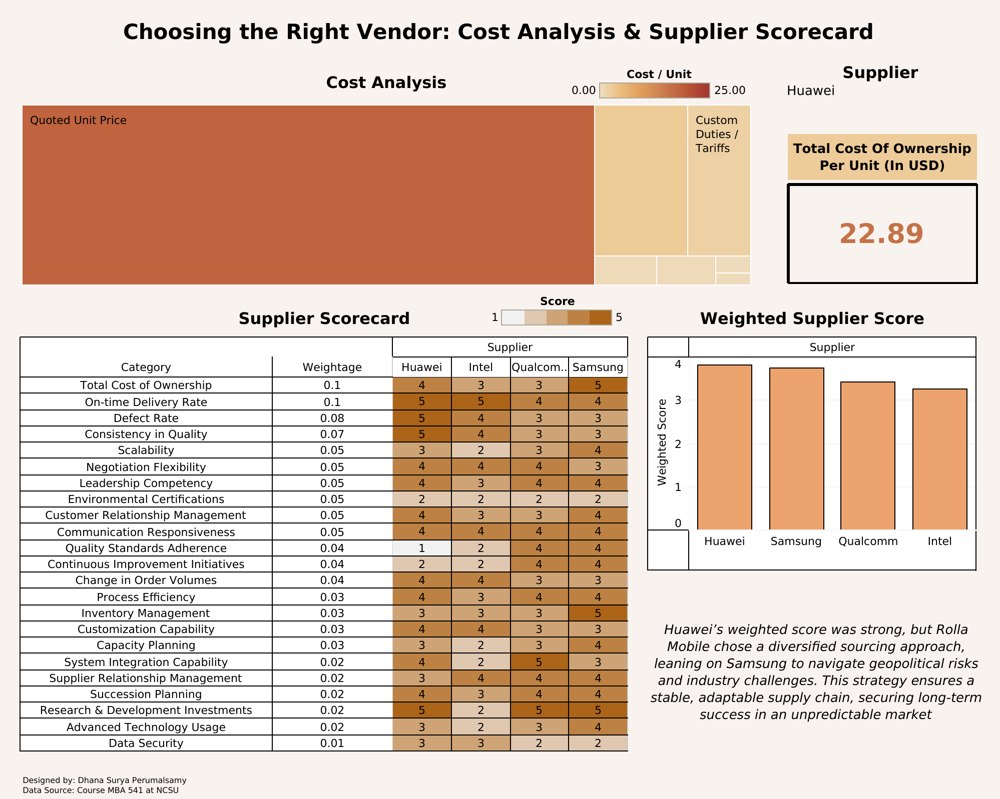

A comprehensive analysis of mobile processors' supply chain using MS Excel for financial and segmentation insights, along with a TCO-based supplier scorecard, resulting in a 75% reduction in supply chain risks.
A procurement optimization strategy using Pareto analysis, revealing that 80% of procurement spend is concentrated among 20% of suppliers, with potential cost savings through supplier consolidation or alternative sourcing options

A detailed plan for aggregate planning and demand analysis at an elevator installation company using linear programming and Excel Solver, resulting in a maximum profit of $6.5M by optimizing production strategies.
A thorough defect analysis at Elevate Textiles using JMP Pro 17 and Tableau, identifying key trends across product attributes,
- color
- style
- finish. Insights targeted a 5% reduction in off-quality production and drove process improvements.
An optimized delivery strategy for a cloud kitchen using Python (NumPy, Pandas, PuLP), achieving a 15% reduction in driver travel distance. Enhanced with visualizations created using Matplotlib and Geopy to display optimized routes and delivery zones.
An MS Access application for searching fuel stations, built with SQL and VBA, integrating Tableau to visualize over 55,000 records for a seamless user experience.